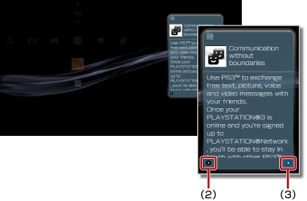

Nätverk > Använda Information Board
Använda Information Board
Information Board visas alltid på XMB™-skärmen och visar de senaste nyheterna om spel och senaste informationen från PlayStation®Store.
Tips!
- För att det ska gå att se nyheterna, måste PS3™-systemet vara anslutet till Internet. För information om nätverksinställningar, se
 (Inställningar) >
(Inställningar) >  (Nätverksinställningar) > [Anslutningsinställningar till Internet] i denna guide.
(Nätverksinställningar) > [Anslutningsinställningar till Internet] i denna guide. - Visningsläget eller teckenstorleken på Information Board kan inte ändras.
- Utformningen på Information Board kan ändras utan föregående meddelande. Utformningen kan även variera beroende på land eller region.
Visa detaljerad nyhetsinformation
1. |
Välj
|
||||
|---|---|---|---|---|---|
2. |
Välj rubrik för det nyhetsämne som du vill veta mer om och tryck sedan på 
|

 -knappen.
-knappen. -knappen för att återgå till listan.
-knappen för att återgå till listan. (Webbläsare) och visa en webbsida.
(Webbläsare) och visa en webbsida.Inställning för att inte visa Information Board
Välj  (Information Board) från
(Information Board) från  (nätverk), och tryck sedan på
(nätverk), och tryck sedan på  -knappen. Välj därefter [Do Not Display] (visa inte) från alternativmenyn.
-knappen. Välj därefter [Do Not Display] (visa inte) från alternativmenyn.
Tips!
För att ta fram Information Board igen, välj återigen ikonen, tryck på -knappen och välj därefter [Display] (Visa) från alternativmenyn.